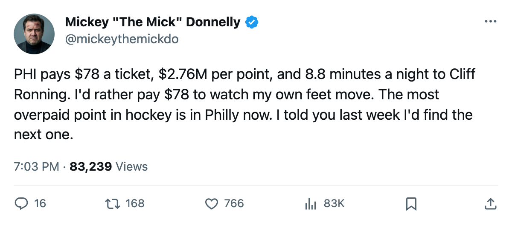
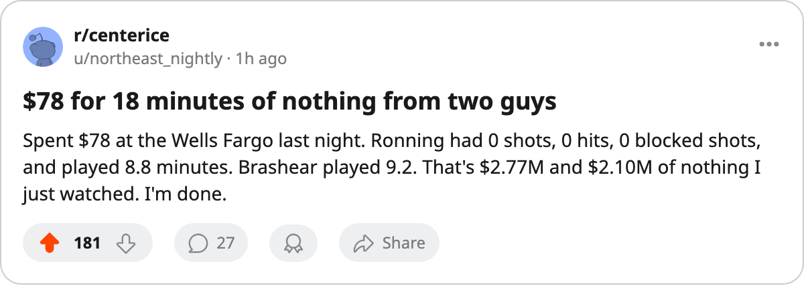

DET
DET STL
STL ATL
ATL MTL
MTL$78 TO WATCH CLIFF RONNING PLAY 8.8 MINUTES: PHILADELPHIA IS THE NEW MOST OVERPAID MESS
$69.07 million buys $2.76 million per point, four straight losses, and two men collecting $2.77M and $2.10M for under 10 minutes a night.
 Mickey "The Mick" DonnellyColumnist, ex-goalie · The Penalty Box
Mickey "The Mick" DonnellyColumnist, ex-goalie · The Penalty Box
The most expensive point in hockey now costs $2.76 million, and it belongs to  Philadelphia Flyers. Not Detroit anymore. Not St. Louis. Philadelphia. The Flyers sit at $69.07 million in payroll, 9-11-3, and on a four-game skid, with 25 points to show for it.
Philadelphia Flyers. Not Detroit anymore. Not St. Louis. Philadelphia. The Flyers sit at $69.07 million in payroll, 9-11-3, and on a four-game skid, with 25 points to show for it.
I put the number on the page last week and people said I picked the wrong team. I stand by it: Detroit is a disaster. But Philadelphia just overtook them, and nobody at The Slot Report seems to have noticed because their spreadsheet sorts by win total.
Here's what $2.76 million per point buys you.  Cliff Ronning78 is making $2.77M to play 8.8 minutes a night. His morale is 72. His overall grade is 78.
Cliff Ronning78 is making $2.77M to play 8.8 minutes a night. His morale is 72. His overall grade is 78.  Donald Brashear76 is making $2.10M for 9.2 minutes a shift and a half. His morale is also 72. Two men, together, collecting $2.77M and $2.10M to skate under 10 minutes per game, and the bench keeps dressing them in games that matter.
Donald Brashear76 is making $2.10M for 9.2 minutes a shift and a half. His morale is also 72. Two men, together, collecting $2.77M and $2.10M to skate under 10 minutes per game, and the bench keeps dressing them in games that matter.
Last ten games: 28 goals for, 50 against. That's a minus-22 over ten games for a team with the fourth-highest payroll in the league. I've seen college teams with worse special teams.
The attendance is 14,985 per game. The ticket price is $78. People are driving to the building, paying $78 each, sitting through a period and a half of nothing, and the coach doesn't shorten the bench. You think those 14,985 fans came to watch Brashear chip pucks off the half wall? They came because they remember when this franchise had a third line that could score, and they keep getting $2.10M of nothing from a man whose only assignment is to exist on the fourth line.
The coach is holding the chisel
I've said it about Mike Babcock in Detroit. I'm saying it about whoever sits behind this bench. You have $69 million. You're minus-12 in goal differential over the season (96 for, 108 against). You're on a four-game losing streak. And you're running men who play 8.8 and 9.2 minutes in games that matter. Shorten the bench to 11 forwards. Give the extra minutes to someone who earns them.
I don't need a Development Index to tell me Ronning is finished as a top-nine option. 8.8 minutes a night, 25 games played, and his morale says he knows it too. 72 out of 100. That's not a player who's fighting for a spot. That's a player counting paychecks.
Brashear at 72 is the same story. $2.10M for 9.2 minutes and a morale number that says he's mentally checked out. You're paying him to be unhappy on your fourth line.
 Martin Straka82 scored 46 points for them in 24 games.
Martin Straka82 scored 46 points for them in 24 games.  Mike Modano86 is somewhere in Dallas doing the same thing for less. The Flyers have one good line and a roster full of expensive filler around it.
Mike Modano86 is somewhere in Dallas doing the same thing for less. The Flyers have one good line and a roster full of expensive filler around it.
Philadelphia's revenue is $42.34 million and their profit is $13.78 million. The owners are fine. The fans are fine. The players are fine. Only the product is broken, and the coach keeps handing minutes to men who've given up. That's not a rebuild. That's a slow bleed with a $78 cover charge.

